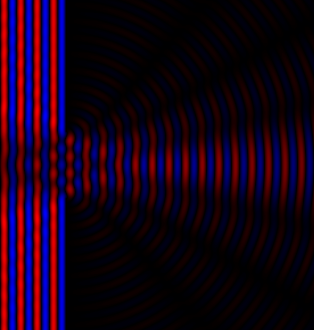

http://bit.ly/Phys141_2

"Knowledge, however, is an attribute of the soul, and so are perception, opinion, desire, wish, and appetency generally; animal locomotion also is produced by the soul; and likewise growth, maturity, and decay. Shall we then say that each of these belongs to the whole soul, that we think, that is, and perceive and are moved and in each of these operations act and are acted upon with the whole soul, or that the different operations are to be assigned to different parts?"
-Aristotle
Psychophysics

The psychometric curve. A. The psychometric function plots the percentage of stimuli detected by a human observer as a function of stimulus magnitude. Threshold is defined as the stimulus intensity detected on 50% of the trials. B. Detection and discrimination thresholds depend on the criteria used by individual subjects. Where an ‘ideal’ observer correctly detects the presence and absence of stimuli at the response threshold with equal probability (curve b), an observer who is told to respond to the slightest indication of a stimulus may report many false positives when no stimuli occur and has a lower response threshold (curve a). An observer who is told to respond only when very certain that a stimulus has occurred reports more hits than false positives and has a higher response thresholds (curve c).
Two-alternative forced choice tasks.

The stimulus-response matrix for a stimulus detection task (yes-no) or a categorical judgment task (red-blue). Although there are two possible stimuli and two possible responses, the data represent conditional probabilities in which the experimenter controls the stimuli and measures the subject's responses. The numbers provide examples of behavioral data obtained from a strict observer who responds "yes" less often than the actual frequency of occurrence of the stimulus.
The variability of sensations evoked by a stimulus can be represented with a normal probability function with a mean ($\mu$) and standard deviation ($\sigma$):
\[ f(x)={\frac {1}{\sigma {\sqrt {2\pi }}}}e^{-{\frac {1}{2}}\left({\frac {x-\mu }{\sigma }}\right)^{2}}\]
Gaussian stimulus magnitudes.

Stimulus magnitudes can be represented by Gaussian curves with standard deviations that measure the fluctuation in sensations from trial to trial. The discriminability of a pair of stimuli is correlated with the distance between the two curves. When two stimuli are similar in magnitude, the two Gaussian curves overlap and no single criterion allows error-free responses.
An ideal observer maximizes the number of correct responses and minimizes the total errors, setting the decision boundary at the intersection of the two curves.
A strict observer minimizes the number of false positives but also reduces the total hits, setting the decision boundary to the right (solid line).
A lax observer maximizes the number of hits but also increases the total false positives, setting the decision boundary to the left of the ideal subject.
Bayes' theorem
\[ P(A\mid B)={\frac {P(B\mid A)P(A)}{P(B)}} \]
where $A$ and $B$ are events and $P(B)\neq 0$.
$\bullet$ $P(A\mid B)$ is a conditional probability : the probability of event $A$ occurring given that $B$ is true.
$\bullet$ $P(B\mid A)$ is also a conditional probability: the probability of event $B$ occurring given that $A$ is true.
$\bullet$ $P(A)$ and $P(B)$ are the probabilities of observing $A$ and $B$ respectively without any given conditions; they are also known as the marginal probability or prior probability.
Proof of Bayes' theorem
$ P(A\mid B)={\frac {P(A\cap B)}{P(B)}} \text{, if } P(B)\neq 0 $
$P(B\mid A)={\frac {P(B\cap A)}{P(A)}} \text{, if }P(A)\neq 0$
Solving for $P(A\cap B)$ and substituting into the above expression for $P(A\mid B)$ yields Bayes' theorem:
\[ P(A\mid B)={\frac {P(B\mid A)P(A)}{P(B)}} \text{ if }P(B)\neq 0 \]
Epidemiology
A particular test for COVID-19 is 90% sensitive
$\bullet$ the test is correctly positive for 90% of infected persons
$\bullet$ the test is incorrectly negative for the other 10%
The test is also 80% specific
$\bullet$ the test is correctly negative for 80% of uninfected persons
$\bullet$ the test is incorrectly positive for the other 20%
Assuming 5% of the population is infected, what is the probability that a random person who tests positive is really infected?
Epidemiology
$ P({\text{Infected}}\mid {\text{Positive}})={\frac {P({\text{Positive}}\mid {\text{Infected}})P({\text{Infected}})}{P({\text{Positive}})}} $
$ ={\frac {P({\text{Positive}}\mid {\text{Infected}})P({\text{Infected}})}{P({\text{Positive}}\mid {\text{Infected}})P({\text{Infected}})+P({\text{Positive}}\mid {\text{Uninfected}})P({\text{Uninfected}})}} $
$ ={\frac {0.90\times 0.05}{0.90\times 0.05+0.20\times 0.95}}={\frac {0.045}{0.045+0.19}} $
$ \approx 19\% $
Anatomy
Diagram of the eye by Galen.
More anatomically correct diagram by Descartes.
ABCB, Cornea and sclera; EF, iris (in actual fact closer to the lens than shown in Descartes' diagram); K, aqueous humor; L, lens; EN, zonule fibers; M, vitreous humor; GHI, retina; H, optic nerve head; O, ocular muscles; and Z, optic nerve.
Ramon y Cajal
Diagram of reflex and voluntary behavior
Neuron types in the cerebellum.
The Compound Eye
Ommaditidia
The larger the diameter of the ommatidium, the less angular resolution.
\[ \Delta \theta_g = \frac{\delta}{r} \]
Thin slit diffraction
If $\delta$ is too small, the ommatidium will ``see'' light at angles far from its axis:
\[ \Delta \theta_d = \frac{\lambda}{\delta} \]
Thick slit diffraction

If $\delta$ is too small, the ommatidium will ``see'' light at angles far from its axis:
\[ \Delta \theta_d = \frac{\lambda}{\delta} \]
Optimum size
Find the $\delta$ where low resolution effects are minimized:
\[ \frac{\Delta \theta_d + \Delta \theta_g}{d\delta}= \frac{\lambda}{\delta^2} + r = 0 \]
Optimum size
The ordinate axis is ommatidia diameter in micrometers.
The abscissa is the square root of eye in millimeters.
Diffraction Limit
A diffraction pattern of a red laser beam projected onto a plate after passing through a small circular aperture in another plate
Light with wavelength $\lambda$, traveling in a medium with refractive index $n$ and converging to a spot with half-angle $\theta$ will have a minimum resolvable distance of
\[ d \approx \lambda \]
Connectomics

C. elegans was the first animal to have its entire nervous system mapped by electron microscopy by John White and co-workers in the 1980s.
More recently, eight C. elegans brains were reconstructed from birth to adulthood, mapping and comparing every chemical synapse and neuronal shape across whole-brain connectomes. From Witvliet et al. 2021.
Connectomics
Connectomics
Connectomics

Cryoelectron microscopy of Piezo

Physiology

(A) Action potentials recorded from single axons dissected from the cutaneous nerve of a frog.
(B) Action potentials from the lateral eye of the horseshoe crab Limulus . Each trace gives the response to a different light intensity, which was systematically increased by an additional factor of ten from dimmest (bottom) to brightest (top).
Physiology

Depolarizing response from Limulus photoreceptor

Hyperpolarizing response from fish photoreceptor
Patch electrode recording

Molecular biology